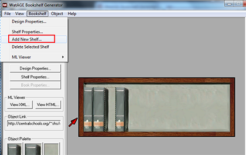
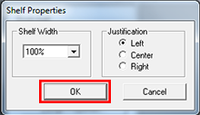
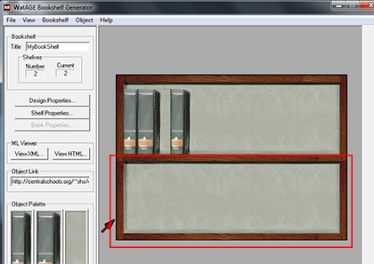

> Working with Shelves >
Adding a shelf
5.1. Adding a shelf
To add a shelf to the bookshelf:
- From the Bookshelf menu, click Add New Shelf.
- In the Shelf Properties dialog box, select the shelf width from the Shelf Width drop down list and the justification, and click OK.
A new shelf appears at the bottom of your shelf stack.
